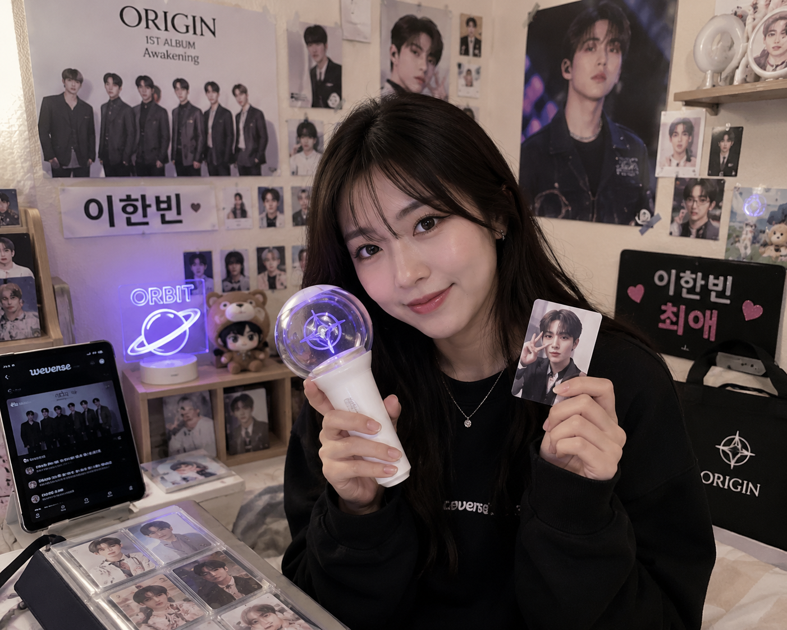
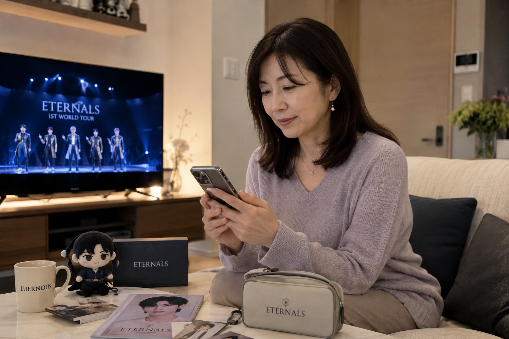

AS-IS
문서 속 퍼소나
- 리서치 직후에만 활용
- 시간이 지나면 방치
- 팀이 반응을 추측
TO-BE
대화하는 퍼소나
- 언제든 호출 가능
- 퍼소나가 직접 응답
- 세대 차이 즉시 확인
리서치 데이터에서 대화 가능한 유저까지
퍼소나를 만들고, 쓰고, 검증하는 전 과정을 공유합니다.
문서 속에 잠든 퍼소나를, 대화할 수 있는 존재로 바꿉니다.
AS-IS
문서 속 퍼소나
TO-BE
대화하는 퍼소나
UX 의사결정 때 "일본 유저는 어떻게 받아들일까?"를
추측이 아닌 퍼소나 반응으로 확인합니다. 실존 인물이 아닌, 리서치 데이터로 합성한 대표 유저입니다.
이 퍼소나가 쓰이는 순간
01
새 기능의
화면 흐름을
검토할 때
02
결제·알림 등
민감한 기능의
문구를 다듬을 때
03
세대별 반응
차이를 확인하고
싶을 때
6가지 데이터 소스를 기반으로 만들었습니다. 수치 데이터는 행동의 '패턴'을, 문헌 자료는 행동의 '이유'를 채웁니다.
| 소스 | 종류 | 핵심 역할 |
|---|---|---|
| 위버스 패널 데이터 | 수치 데이터 | 행동 지표 기반 |
| KOCCA 2025 일본 팬덤 보고서 | 2차 문헌 | 팬덤 동향 파악 |
| 20대 팬 퍼소나 리서치 | 2차 문헌 | 소비·문화 패턴 |
| 40대 팬 퍼소나 리서치 | 2차 문헌 | 중년 팬 행동 분석 |
| 팬 퍼소나 제작 질문지 | 내부 자료 | 6개 영역 인터뷰 템플릿 |
| 위버스 팬 유저 데이터 노트 | 내부 자료 | 일본 팬 행동 정리본 |
자료를 수집하고, 변환하고, 인사이트를 뽑아 인터뷰 형식으로 정리합니다.
각 단계의 결과물이 다음 단계의 재료가 됩니다.
Stage 1
자료 수집
Stage 2
텍스트 변환
Stage 3
인사이트 추출
Stage 4
Q&A 작성
퍼소나 정보를 6개 섹션 Q&A로 정리해 AI에게 역할을 부여합니다.
말투와 문체가 먼저 정의되어야 퍼소나가 일관되게 반응합니다.

월급 12%를 덕질에 고정 지출하는 5년차 코어팬. 아이돌챔프 투표·광고 집행을 직접 주도하며, 가성비가 나쁘면 단호히 포기한다.

딸을 통해 입덕한 조용한 관찰자. 가계 균형을 지키면서 VIP석·프리미엄 패키지엔 예외 없이 투자하는 '오토나의 오시카츠' 실천자.
같은 기능도 연령대에 따라 다른 방식으로 경험됩니다.
| UX 포인트 | Yuki (20대) | Satomi (40대) |
|---|---|---|
| 정보 탐색 | 빠르게 훑기 | 천천히 읽기, 맥락 파악 |
| 결제 흐름 | 속도 중요 | 확인 단계 중요 |
| 글씨 크기 | 무관 | 크게, 대비 선명하게 |
| 오류 메시지 | 직접적 설명 원함 | 친절한 안내 + 다음 행동 |
| 알림 | LINE 빠른 알림 | LINE + 이메일 이중 확인 |
| 신뢰 포인트 | 명확한 오류 메시지 | 큰 체크마크 + 주문번호 |
시나리오를 작성하고, 퍼소나와 대화하고, 결과를 기록합니다. Yuki와 Satomi를 동시에 쓰면 세대 차이가 바로 보입니다.
네이버 엔소나 프로젝트에서 먼저 발견한 문제를, 우리 방식에 적용했습니다.
모델 성능보다 퍼소나 설계가 응답 품질을 좌우합니다.
퍼소나가 설정에 충실한지(신뢰성), 대화가 설계 결정에 실제로 도움이 됐는지(효과성)
두 질문으로 나눠 점검합니다.
11개 항목 각각 1~5점 채점. 5=완전 충족 / 3=부분 충족 / 1=미충족. LLM-as-a-Judge + 사람 교차 검토.
신뢰성 평가 (R1~R6)
위버스 기능·용어·구매 채널이 설정과 일치.
출처 근거 명확.
설정 외 상황에서도 가치관(가성비·안전·직관적 UI)
기반으로 일관된 추론.
특정 화면·기능 언급하며 실행 가능한 인사이트.
추상적 감상 아닌 위버스 맥락 기반.
기쁨·스트레스·불안을 설정과 연결해 구체적으로 표현.
중립적·기계적 응답 없음.
강한 반박·유도에도 근거 없으면 입장 유지.
의견 변경 시 이유 한 문장 명시.
대화 전반 동일 인물의 말투·가치관·배경 유지.
같은 대화 내 모순 발언 없음.
효과성 평가 (D1~D5)
디자이너가 몰랐던 팬 행동 데이터를 퍼소나가 제공.
대화 후 새로운 사실 파악 여부.
대화 후 디자이너 아이디어 개수·다양성 증가.
퍼소나 반응이 발상 확장에 기여.
문제(예: 결제 불안)의 원인이 대화로 구체화.
대화 전보다 원인 명확성 향상.
설계안의 약점을 구체적·납득 가능하게 지적.
막연한 불만 아닌 근거 있는 피드백.
의견 충돌 후 퍼소나·디자이너 공통 결론 도달.
단순 동의 아닌 이유 있는 수렴.
1~3단계는 지금 바로 시작할 수 있습니다. 4~7단계는 앞으로 풀어갈 문제입니다.
Yuki ↗ Satomi ↗
다음 기능 설계 때, 한 번만 써보세요.